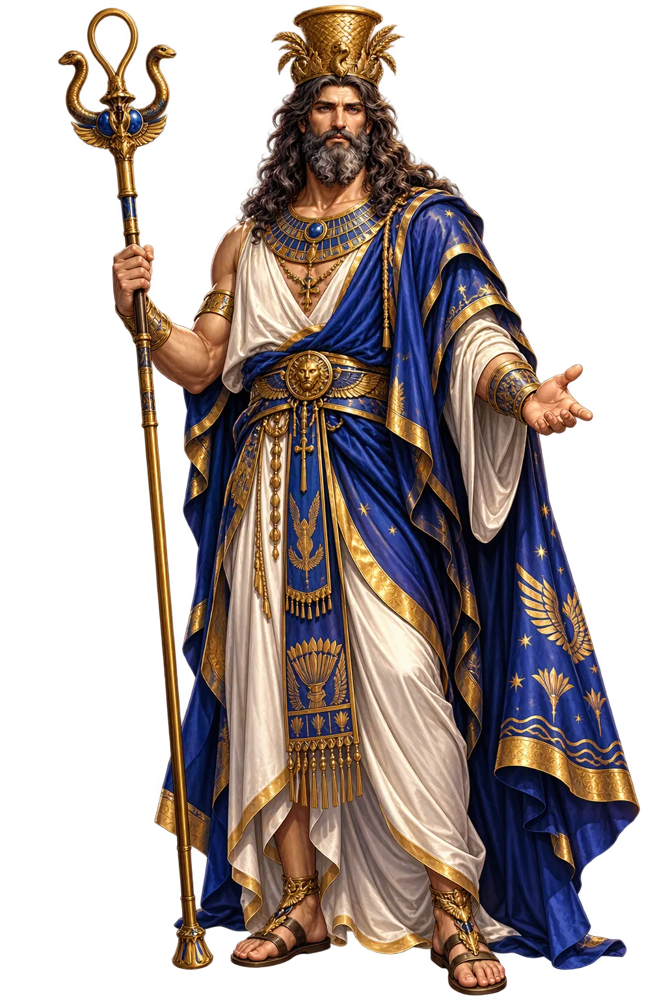
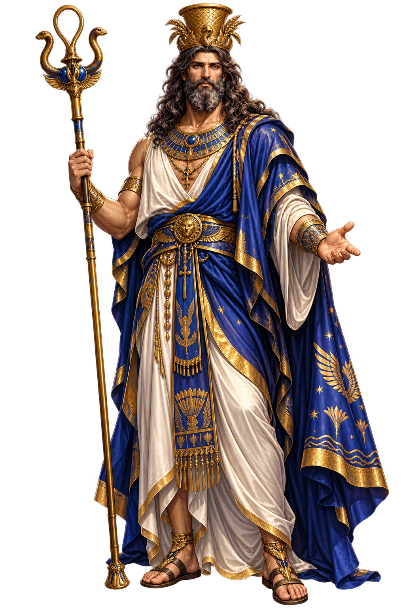

The Living Myth
Syncretic God, Underworld · The Composite God of the Ptolemaic Age · Composite of Osiris and Apis

Stories of Serapis
Serapis has no native myths of his own — he was assembled, not born. His ‘mythology’ is the history of a political-theological project: the Ptolemaic state needed one god Greeks and Egyptians could share, and the priests of Memphis supplied the old, deep name — Osiris-Apis — while the court supplied the face, the cult, and the capital.
The foundation legend — told by Plutarch and Tacitus — has the new cult revealed to Ptolemy I in a dream: bring the image of an unknown god from Sinope on the Black Sea to Alexandria. Whether history or court theology, the story gave the composite god an oracular pedigree worthy of both his constituencies.
The real root is older than the Ptolemies: when the living Apis bull of Memphis died, it was mummified as ‘Osiris-Apis’ — the godhead absorbed into the underworld lord. The Serapeum at Saqqara, the bull’s catacomb-mausoleum, held the mummies of centuries; Serapis is that ancient fusion wearing a Greek himation.
Alexandria’s Serapeum — part temple, part library annex, part tourist wonder — made Serapis the patron of the world’s scholarship. Pilgrims and students alike worshipped under its colonnades; the god’s temple was the city’s landmark until its destruction in 391 CE under Theophilus.
From Alexandria the cult travelled with the grain fleet: Serapea rose in Ostia, Rome, and every port of the Mediterranean. The god promised initiation, protection in life, and a dignified afterlife — the most successful Egyptian export since the pyramid shape, and a direct ancestor of the Isis-cult’s empire-wide success.
Osiris-Apis, Lord of the Serapeum
Serapis is Egypt’s most deliberate theological construction: the god the Ptolemies built to rule a bilingual empire. Osiris-Apis — the dead bull of Memphis — was given Greek looks and Greek mystery-cult dignity, and became the patron of Alexandria, the granary of the Mediterranean, and finally a god of the entire Roman world.
The fusion of the dead Osiris with the Apis bull of Memphis — afterlife power in bovine form.
His great Serapeum towered over the harbour city; its library annexe made him a god of learning.
Patron of the Nile’s harvest and the grain fleets; his modius of grain crowns his head.
His cult carried Egyptian afterlife promises in Greek initiatory form — a blueprint for later mystery religions.
From the original script to the living URL
𓊨𓁹𓀭𓎛𓐑𓊪𓃒
The name in its original Egyptian form. Serapis (𓊨𓁹𓀭𓎛𓐑𓊪𓃒) is attested in the source tradition — “Composite of Osiris and Apis”. Its original diacritics and script distinctions carry the full phonetic and orthographic weight of the source tradition.
serapis
The plain serapis form shares the canonical spelling. Because this name is already written in Latin letters, no recovered diacritics are required; capitalization follows the proper-noun convention.
Serapis
The canonical spelling of Serapis needs no recovered marks. Its value is consistent citation, transparent provenance, and a stable digital home for the scholarly record. The address is readable as-is to both DNS and humanity.
Serapis.com
This restoration is written entirely in ASCII letters — no special domain encoding stands between Serapis and the DNS. The domain reads identically to machines and to human eyes.
The attested spelling family of Serapis
Serapis
Restores 𓊨𓁹𓀭𓎛𓐑𓊪𓃒. The full canonical restoration. serapis.com is not in the PuniCodex collection — it is watched for release; if it drops, this temple upgrades to an owned flagship. Attested by Faulkner, Wb.
How Serapis was spoken
How Serapis travels from ancient script to the modern URL
The lore you have read is the living myth. Extended Lore opens the scholarly vault beneath it: the cult and its material remains, a history of the image, the name after antiquity, a meditation on what the name still means, and the full scholarly apparatus — etymology, orthography, sources.
Enter Extended Lore